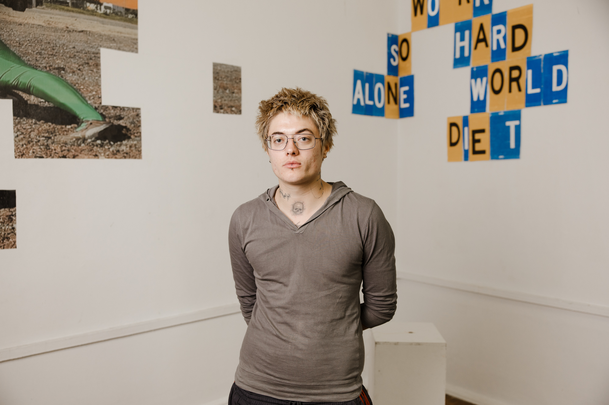

Sydney Jarrett is an artist working on Gadigal land. His sculptural and performance-based practice explores re-compositions of state materialities and investigates relationships to authority, regulation, compliance, and public space. He is engaged in practices of loitering and gestures of refusal.
His first solo exhibition, An order into another, was presented at Schmick Contemporary in 2025.
He graduated from UNSW Art & Design in 2025 with a Bachelors of Fine Arts (Honors).
His graduate body of work, Gate-crash, was selected for Perth Institute of Contemporary Arts Hatched National Graduate Show 2026, where he was selected as the interstate Hatched artist-in-residence.

2026 - 'Hatched: National Graduate Show' Perth Institute of Contemporary Art
2026 - 'Domain' Pari
2025 - 'Fugitives' Firstdraft
2025 – 'An order into another' Schmick Contemporary
2024 – 'Myth and Signification' Kudos
2024 – 'Connection is Unstable' Rofe Street Gallery